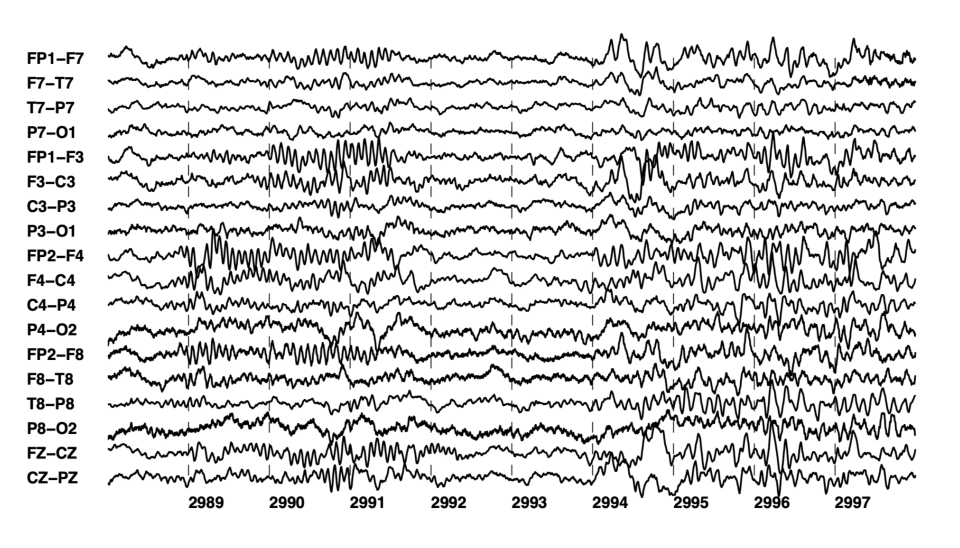

PROJECT 01 — FLAGSHIP
Deep Learning · Healthcare
EEG Seizure Detection
Four architectures benchmarked for seizure-onset detection on 23-channel pediatric EEG — measuring exactly what temporal modeling adds.
PyTorchMNECHB-MITCNN · GRU · LSTM · TCNSaliency maps
View repository ↗
Dataset · CHB-MIT scalp EEG (PhysioNet)
23
Pediatric patients
~1,000h
Recorded EEG
198
Labeled seizures
23ch
256 Hz · EDF
Raw signal · 23-channel scalp EEG during a seizure event

ictal dischargeInference pipeline
InputEEG · 23ch / 256Hz
→
Segment10s windows
→
SpatialCNN encoder
→
TemporalGRU
→
DecisionSeizure / Clear
The hard part · class imbalance
149 seizure windowsjust 0.23% positive
64,389 totalhandled w/ weighted loss
Architecture benchmark · F1 score
Multi-patient test split (patients 1·2·3·5). CNN+GRU won — F1 0.854, AUC 0.9924, recall 0.814. Both temporal models beat the CNN baseline, confirming sequential modeling adds real value.